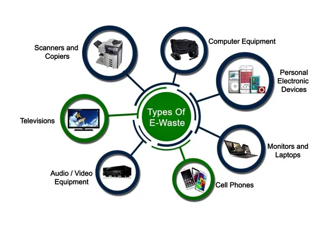
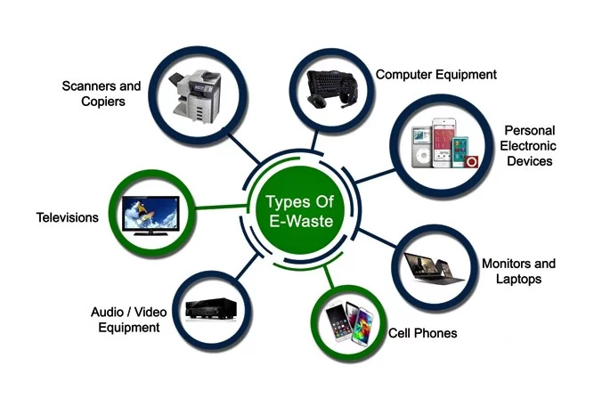
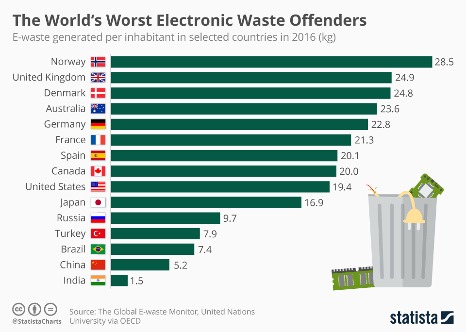
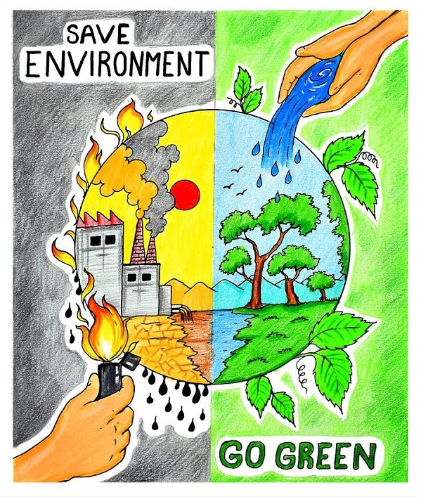
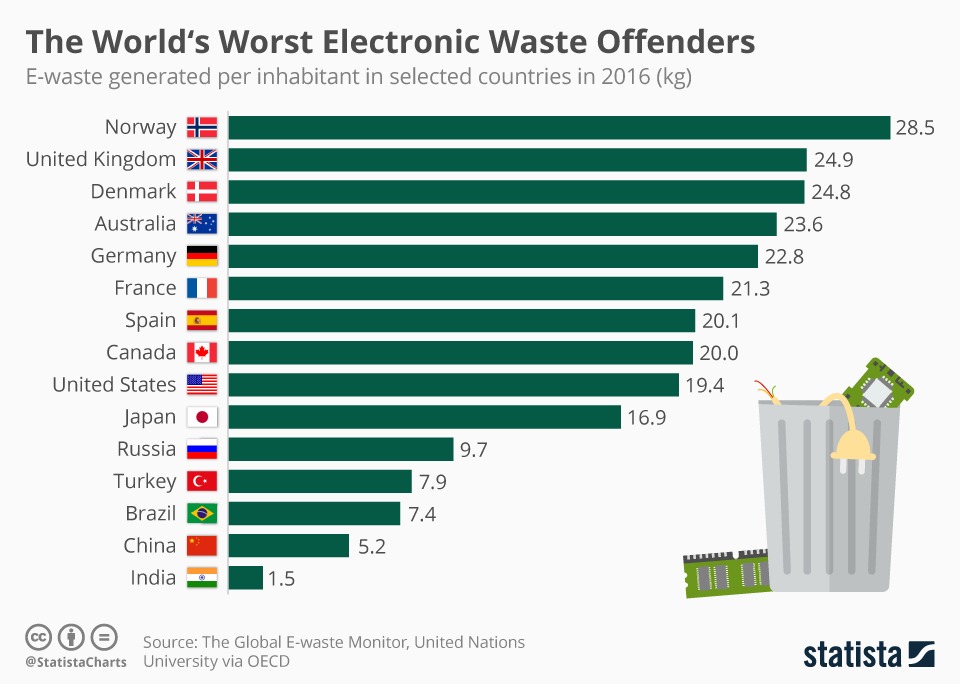
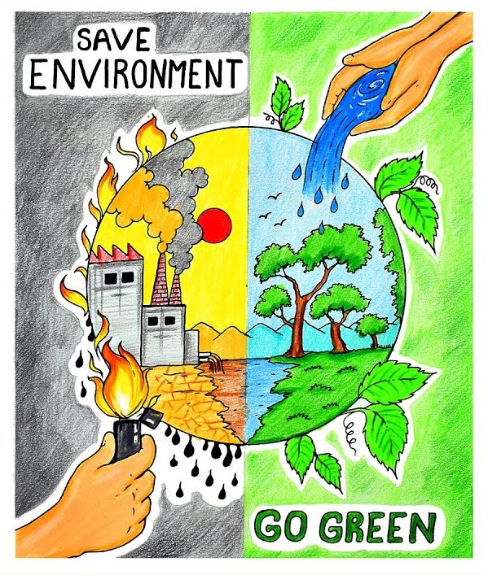

.jpeg) 

 




International E-Waste Day
Each year, International E-Waste Day is held on 14 October, an opportunity to reflect on the impacts of e-waste and the necessary actions to enhance circularity for e-products. International E-Waste Day was developed in 2018 by the WEEE Forum to raise the public profile of waste electrical and electronic equipment recycling and encourage consumers to recycle.
E-waste contains hazardous substances, including lead, mercury, cadmium, brominated flame retardants, and PVC plastics. When improperly disposed of in landfills or incinerated, these substances can be released into the environment.Landfills lack proper management and infrastructure to handle e-waste effectively. As a result, toxic substances from disposed electronics can contaminate soil, water, and air.Incinerating e-waste without proper controls can release toxic gases
Managing e-waste is crucial to minimize its environmental and health impacts. Here are some key aspects of e-waste management:
Collection:
Establishing proper collection systems is essential. This can involve dedicated e-waste drop-off points, recycling centers, or collection drives organized by manufacturers, local authorities, or recycling companies.
Recycling:
Recycling e-waste involves the separation and recovery of valuable materials from discarded devices. It typically includes processes like dismantling, shredding, sorting, and extracting valuable metals, plastics, and other components for reuse.
Disposal:
Certain e-waste components, such as hazardous materials, require proper disposal to prevent contamination. Specialized facilities are equipped to handle the safe disposal of such substances, adhering to environmental regulations and safety standards.
Reuse and Repair:
Encouraging the reuse and repair of electronic devices can extend their lifespan and reduce e-waste generation. Repairing or refurbishing devices, donating them to charitable organizations, or selling them for reuse can help reduce the environmental impact of electronic consumption
Awareness and Education:
Educating the public about the importance of proper e-waste management, its environmental implications, and available recycling options is crucial. Increasing awareness can encourage responsible disposal practices and support the development of efficient recycling infrastructure.
E Waste
Effective e-waste management requires collaboration among individuals, businesses, governments, and recycling industries to create a sustainable and environmentally friendly approach to handling electronic waste throughout its lifecycle.
Climate Change
It is also worth considering the effects electronic goods have on climate change. Every device ever produced has a carbon footprint and is contributing to human-made global warming. Manufacture a tonne of laptops and potentially 10 tonnes of CO2 are emitted. When the carbon dioxide released over a device’s lifetime is considered, it predominantly occurs during production, before consumers buy a product. This makes lower carbon processes and inputs at the manufacturing stage (such as use recycled raw materials) and product lifetime key determinants of overall environmental impact.
Climate change caused by e-waste primarily stems from the improper handling and disposal of electronic devices, which leads to the release of greenhouse gases and toxic substances into the environment.
Recycling and Recovery Efficiencies:
- While recycling e-waste is crucial for reducing its environmental impact, the process itself requires energy and can release greenhouse gases
- Recycling technologies for complex electronic components are often inefficient and can result in incomplete recovery or the release of harmful byproducts
- In some cases, e-waste is exported to developing countries with lax environmental regulations, leading to unsafe practices, such as informal recycling methods that emit pollutants and contribute to climate change.
Why Recycle
- The Earth Natural resources are limited and hence we make sure that we preserve them and use them carefully.
- To save mother earth by preventing air pollution, water and soil pollution.
- To generate Employment opportunity.
- To Eliminate Landfill.